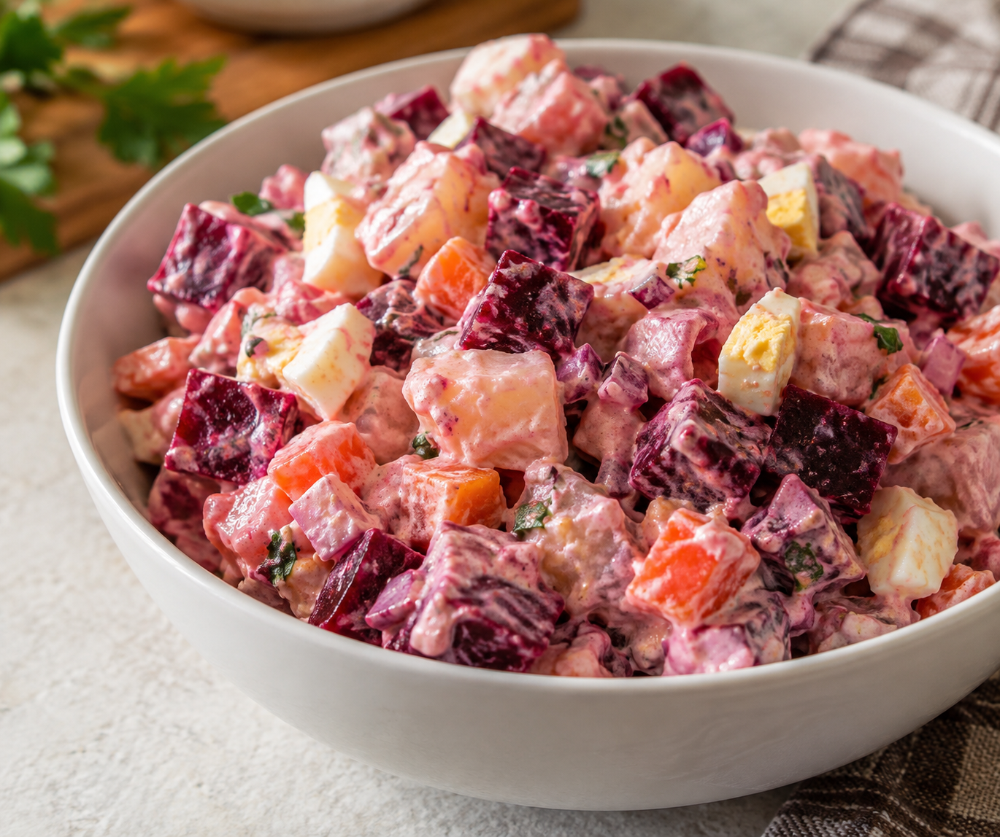

Home

Description
This creamy Dominican potato salad combines tender potatoes, carrots, and red beets in a tangy mayonnaise dressing. Its bright pink color makes it a beautiful side for any meal.
Ingredients
- 4 medium potatoes, peeled and diced
- 2 medium red beets
- 2 medium carrots, peeled and diced
- 3 hard-boiled eggs, chopped
- ½ small red onion, finely diced
- ½ cup mayonnaise
- 1 tablespoon white vinegar
- Salt and black pepper to taste
Steps
- Cook beets: Boil whole, unpeeled beets for 35–50 minutes, until tender. Cool, peel, and dice.
- Cook potatoes and carrots: Boil potatoes in salted water for 10–15 minutes. Add carrots during the last 8 minutes. Drain when tender.
- Cool: Let the vegetables cool completely before mixing.
- Make dressing: Mix mayonnaise, vinegar, salt, and pepper in a large bowl.
- Combine: Gently stir in potatoes, carrots, beets, eggs, and onion.
- Chill: Refrigerate for at least 1 hour. Serve cold.